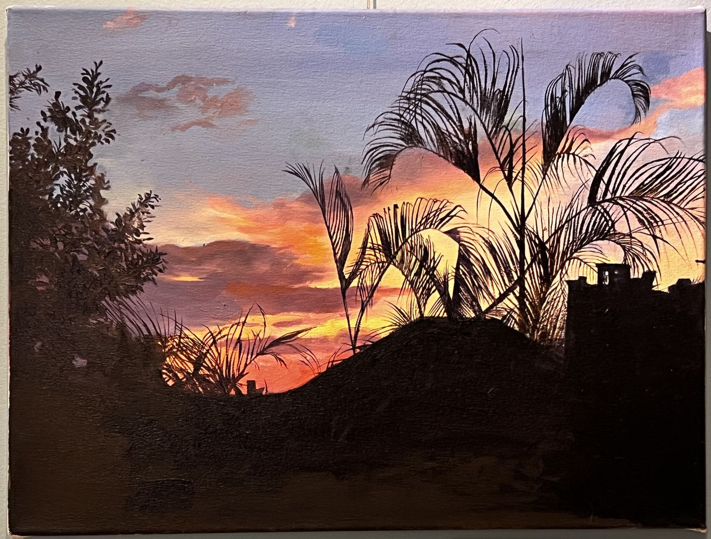
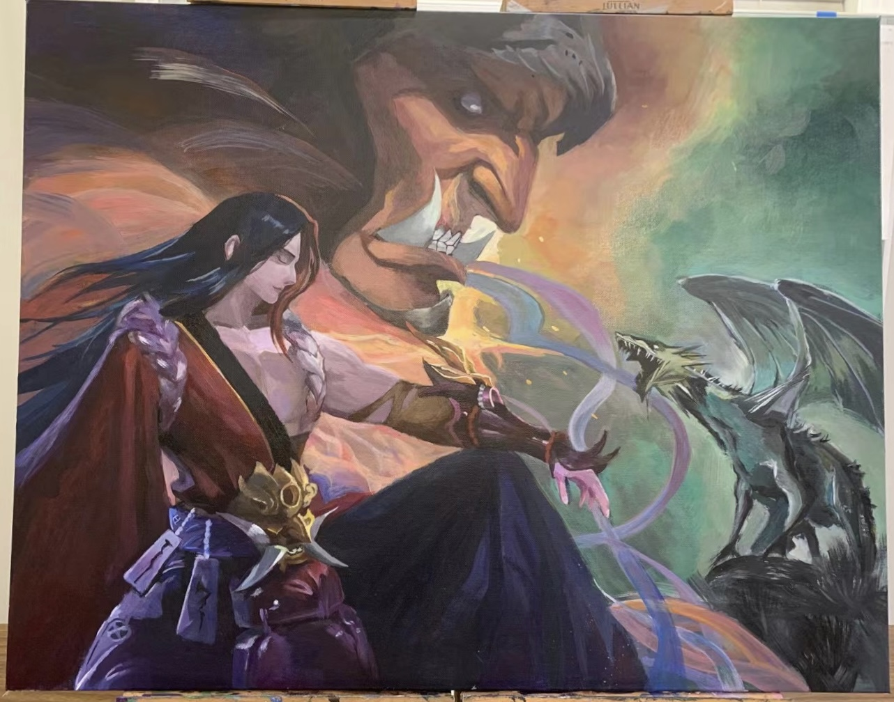
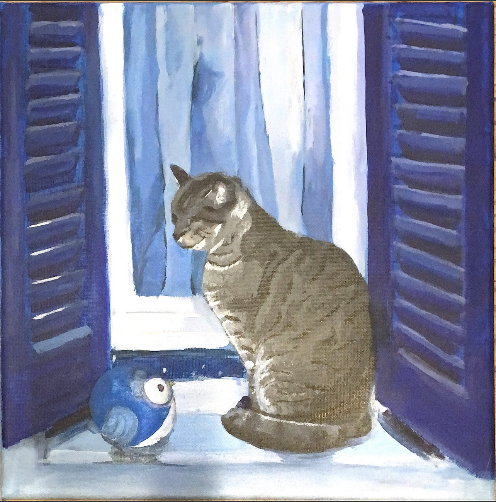
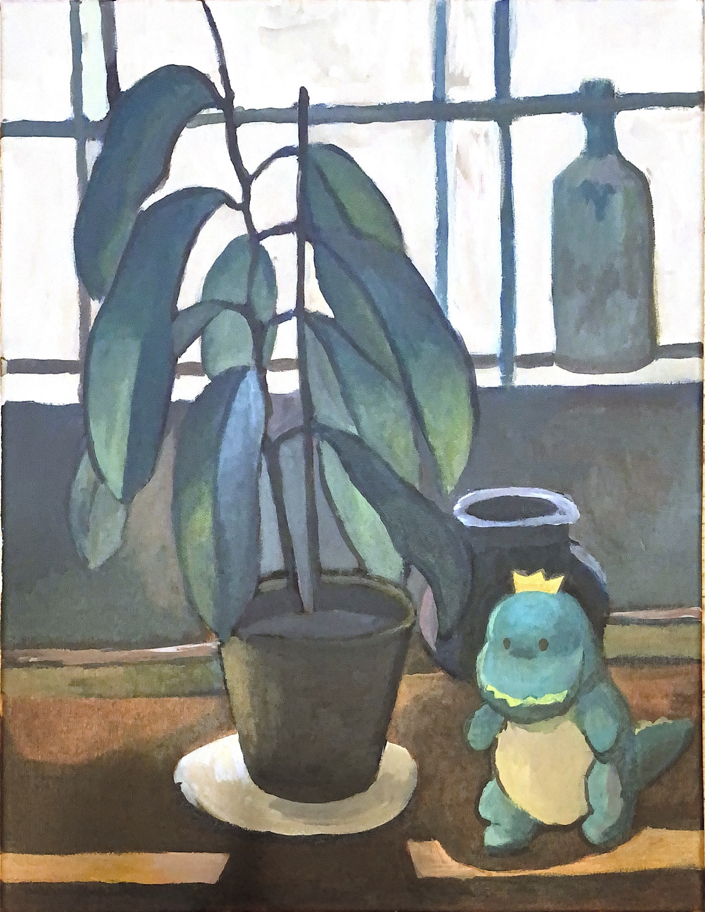
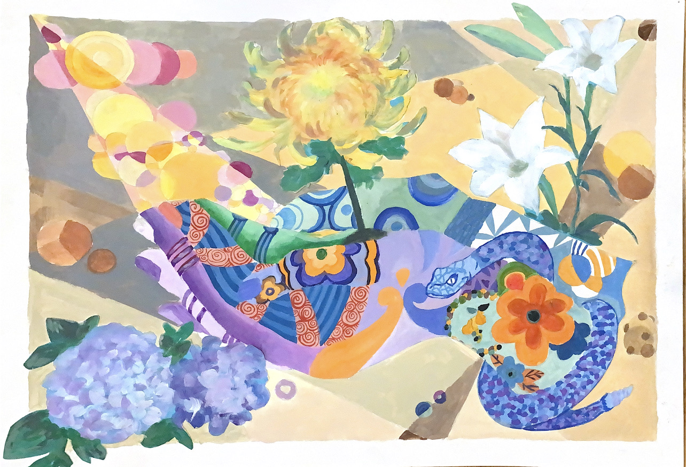
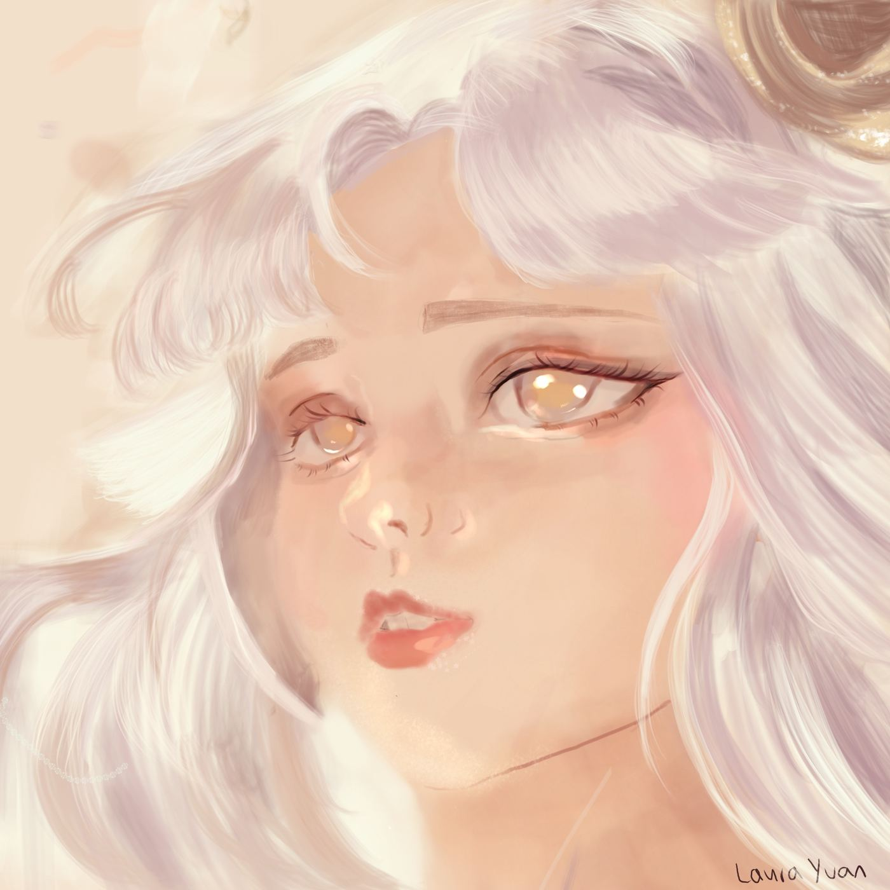
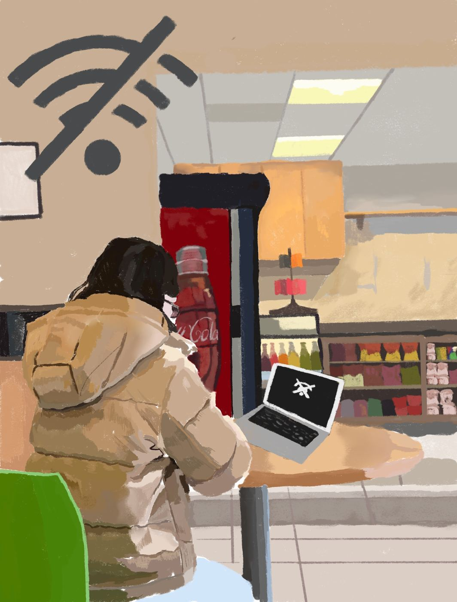

Data science · Cognitive science · Visual arts
I build things at the
intersection of data and people.
First-year at UC San Diego studying data science and cognitive science. I research bioacoustic ML pipelines, design interactive dashboards, and make oil paintings. Sometimes all three feel like the same problem.
Selected work
Ocean Pulse
Interactive dashboard for California Current ecosystem health — designed for non-technical users to explore 70 years of ocean data and AI-generated policy recommendations.
Bioacoustic species classifier
Active learning pipeline for bird species classification from audio, in collaboration with the San Diego Zoo. Minimizes annotation cost on imbalanced multi-species datasets.
Art










About
Currently
Student researcher at Engineers for Exploration (UCSD), building ML pipelines for bioacoustic species classification in collaboration with the San Diego Zoo.
Background
I came to HCI through data science — building dashboards and realizing that good data and good design are inseparable problems. Also a practicing visual artist.
Education
B.S. Data Science, minor in Cognitive Science — UC San Diego, class of 2029.
Looking for
HCI research opportunities and design collaborations where data and human experience intersect.